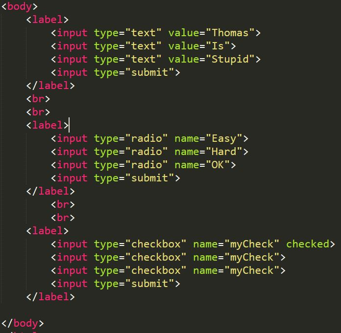

HTML-Skjemaer

HTML form er en av hovedmåtene en bruker kan samhandle med et nettsted eller et program. Brukeren får tilgang til å skrive inn data som nettstedet bruker. F.eks. til et skjema om dine sykdommer.
Form består ev en eller flere tags. Fields, select bokser, knapper, checkbokser eller radioknapper er noen eksempler. Disse går som attributter i en input tag. Ofte kan det være lurt å bruke en "label" om du har flere input tags som bildet til høyre.
Radioknapper
Radioknapper, input type= "radio", er som sagt en variant av input taggen. Her kan du få en eller flere valg som du kan "hukke av" eller "marker". Brukes når man bare ønsker at èn av de skal bli hukket av, ikke flere.Checkboks
Checkboks, input type="checkbox", er enda en variant a input taggen. Her har du også en eller flere valg som du kan "hukke av". I motsetning til radiokanpper så kan du "hukke av" flere på en gangSubmit
Submit, input type="submit", er også en variant a input taggen. Her lager du en knapp som tar verdiene fra de andre input feltene og sender det til en "form-handler". Hvem og hva denne form-handleren er blir spesifisert i form action="" feltet.Password
Password, input type="password", brukes for å skjule sensitiv informasjon i et input felt. Det kan være for eksempel passord eller annen personlig informasjon som man ikke ønsker at skal bli sett. Ved å gjøre det om til "password" så skjules denne informasjonen. Den tar imot både tekst, tall og tegn.File
File, input type="file", er for å kunne laste opp eller velge fil. For å kunne opplaste en fil må det stå "enctype="multipart/form-data"" i "form". Når man trykker på knapper får man mulighet til å velge hvilken fil man vil velge.Hidden
Hidden, input type="hidden", brukes for å ha en verdi som ikke brukeren kan endre på. Denne informasjonen kan f.eks. legge sammen med noe annet brukeren har skrevet inn. Det er derimot ikke anbefalt å bruke dette i forbindelse med sikkerhet. Et eksempel ligger under teksten. Men i og med at den er "hidden" så har du ikke mulighet til å verken se eller endre den.Nytt i HTML5:
Fieldset og legend
Ved bruk av "fieldset" grupperes et skjemafelt/et felt og lages en border rundt det. Når man da legger inn "legend" så brytes en del av denne borderen med den teksten man legger inn i "legend"Search
Hidden, input type="search", er en mer semantisk variant av "text". Det lar enheter og brukere lettere forstå at denne brukes for å søke. Veldig viktig å legge til en navn. Uten et navn vil ingenting bli sendt inn.Search:
Range
Range, input type="range", gir deg en slider som viser ulike verdier. Ved å bruke min og max så bestemmer du verdiene som kan velges. Step angir hvor lange stegene/hakkene er.Number
Number, input type="number", lar deg kun skrive inn tall. Du får også to piler (opp og ned) på høyre side som kan brukes istedenfor tastaturet. Det er også mulig å bruke min, max og step akkurat som "range".Month
Month, input type="month", gir deg muligheten til å legge til måned og år. Nettlesere gir deg en kalenderløsning som gjør det veldig enkelt å velge. Altså år og måned, YYYY-MM. Ikke hvilken dag.Date
Date, input type="date", gir deg muligheten til å legge til dato. Som men "month" så får du enn enkel kalenderløsning gitt av nettleserene. Forskjellen er at denne inkluderer år, måned og dag.Color
Color, input type="color", gjør at du kan legge til farger. Nettleseren tilbyr en veldig grei fargeleser. Denne kan bli brukt til mye forskjellig. F.eks. at at du kan velge bakgrunsfargen til en sirkel ved å hente verdien som har blitt angitt.Textarea
Texarea brukes om det skal fylles inn større menge tekst. F.eks. noen av eksamensprogrammene som du sikkert har brukt denne variantet. Denne kan også deles inn i rader/rows og colonner/cols.Select
Select brukes med èn eller flere "option". Her får du en liste som inneholder èn eller flere valg. Kommer helt an på hvor mange "option" du har. Brukes ofte sammen med javascript arrays.Datalist
Datalist brukes sammen med input taggen. "Datalist" kombinert med "option" gir flere valgmuligheter/eksempler til en input tagg. Dessverre er ikke denne støttet av Safari, Internett explorer 9 (og tidligere) og Opera mini. I tillegg krever det at du legger til "list" attributten til "input" taggenn. Og da gjør at id'en til "datalist" matcher denne.Requiered, disabled og type attributtene
Dette er attributter som gjøre eller forteller noe om input feltet. "input requiered" krever at dette feltet må fylles ut. "input disabled" gjør at feltet er tilgjengelig. "input type=""" forteller oss hvilklen type denne inputten skal være.Requiered (text): Disabled (text):